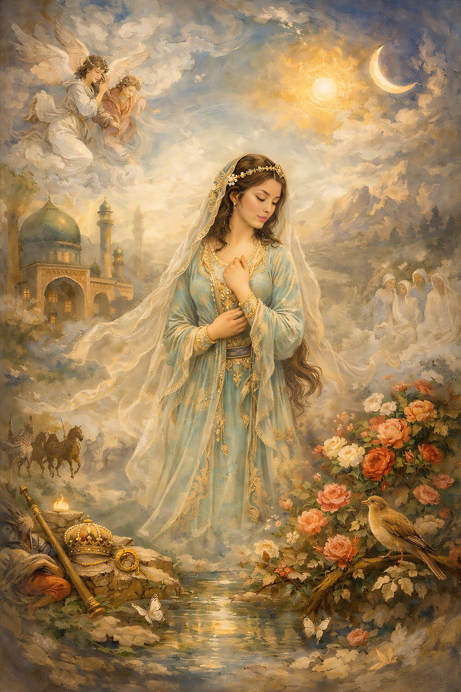
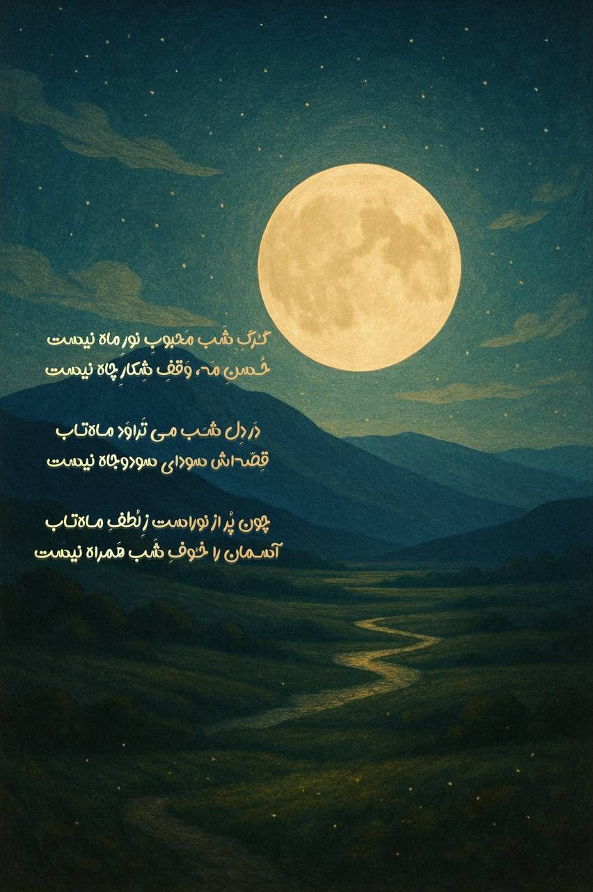
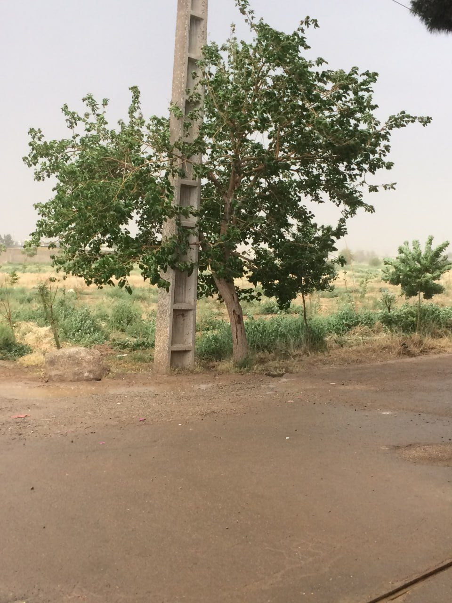

بعضی شبها آدم تا ساعتها به یک مکالمه فکر میکند؛ نه برای پیدا کردن مقصر، نه برای اثبات حقانیت خودش، فقط برای فهمیدن اینکه کجای راه، حرفها اینقدر از هم دور شدند.
امشب هم از همان شبهاست.
حرف میزد و من فقط گوش میدادم. میان جملههایش خستگی موج میزد؛ خستگیِ کسی که احساس میکند مدتهاست فهمیده نشده است.
گفت:
«تا میخواستم حرف بزنم، توی دهانم میزدی.
من را کوچک میکردی.
من را یک آدم بیارزش نشان میدادی.
احساس میکردم دنبال بهانهای هستی که از سرت بازم کنی.
از توضیح دادن خسته شده بودم.
هرچه میگفتم، حتی وقتی همان حرفی را میزدم که میخواستی بشنوی، باز هم برداشت دیگری میکردی.»
و من بعد از شنیدن این جملهها، برای لحظهای در خودم فرو رفتم.
نمیدانم حق با چه کسی بود.
نمیدانم واقعاً آنگونه بودهام که او میدید یا نه.
فقط میدانم شنیدن این حرفها آسان نبود.
سخت است وقتی بفهمی کسی که برایت مهم بوده، اینهمه وقت با تصویری از تو زندگی کرده که خودت هرگز آن را نشناختهای.
سخت است وقتی متوجه شوی نیتهایت به مقصد نرسیدهاند و در میانهی راه، زیر آوار سوءتفاهمها دفن شدهاند.
شاید من هم اشتباه کرده باشم.
شاید گاهی بیشتر از آنکه بشنوم، جواب داده باشم.
شاید در تلاش برای توضیح دادن خودم، از فهمیدن احساس او جا مانده باشم.
اما حقیقت این است که هیچوقت نخواستم او را کوچک کنم.
هیچوقت نخواستم احساس کند سربار است یا باید از زندگی من کنار گذاشته شود.
اگر فاصلهای به وجود آمد، بیشتر از آنکه از بیاهمیتی باشد، از ناتوانیِ من در رساندن حرفهایم بود.
بعضی رابطهها نه با یک دعوا، نه با یک اتفاق بزرگ، بلکه با جمع شدن صدها سوءبرداشت کوچک زخمی میشوند.
زخمهایی که در لحظه دیده نمیشوند، اما روزی میرسد که تمامشان یکجا سر باز میکنند.
امشب به جای دفاع کردن از خودم، فقط به این فکر میکنم که چقدر عجیب است؛ دو نفر میتوانند ساعتها با هم حرف بزنند و باز هم هر کدام احساس کند دیگری حرفش را نفهمیده است.
شاید بعضی دردها راهحل مشخصی نداشته باشند.
شاید بعضی گفتگوها برای تغییر دادن چیزی اتفاق نمیافتند؛ فقط میآیند تا حقیقتی را آشکار کنند که مدتها زیر سکوت پنهان مانده است.
و حقیقت امشب این بود:
او خسته بود...
و من تازه فهمیدم چقدر از این خستگی را ندیده بودم.
گاهی یک نگاه، یک نفس، یک حضور،
جهان را به جای بهشت بدل میکند.
این شعر، ثبت لحظههاییست که حضورش،
زندگی را به معنایی تازه رساند.
گلرخی دارم که رویش ماه تابانِ من است
هر نگاهش شوق بر دل خندهاش جانِ من است
عطرِ گیسویش شرابِ کهنهی شبهای شعر
مستیام از بادهایست کز او به پیمانِ من است
آسمان بیاو قفس، دنیا بدونش سرد و کور
او دلیلِ دیدنم، چشمِ چراغانِ من است
خستگی را با تبسم از دلم بیرون کند
تکیه گاه قلب من دارو درمانِ من است
هر نفس با یاد او دل تازه میگیرد نفس
زندگی بینامِ او رنجِ فراوانِ من است
دست اگر از دستِ دنیا شستهام، باکی نبود
دستِ من در دستِ او که جان جانان من است
دل اگر از هر چه غیر از اوست، یکسر بگذرد
این گذشتن خود نشانِ عهدِ پنهانِ من است
هر کجا نامِ وفا آید، نگاهم سوی اوست
عشقِ او سر خط قلبم، اصل ایمان من است
در غزل نامش نیارم، باز پیداست از نفس
چون حضورش در کلامم روحِ حیرانِ من است
این شعر را در شبی نوشتم که دلتنگیام از حد گذشته بود؛
شبی که کلمات نمیخواستند کوتاه بیایند
و سکوتِ او هم از طرفی مانع نمیشد.
نمیدانستم این همه احساس چگونه در چند بیت جا میشود،
تا آنکه صبحِ زود، بیاختیار این شعر بر من جاری شد…
در بهشتِ جانِ تو، جانم به ماوایی رسید
چشمِ من آخر به سیلِ باغِ زیبایی رسید
عطرِ آغوشت خبر داد از قرارِ ماندنم
رازِ ما از راهِ تن، رازی به شیدایی رسید
چشم در چشمِ تو افتاد و زمان از کار ماند
این سکوتِ ناگهان، تا حدِّ نجوایی رسید
لب به لب، حرفی نگفتیم و دو تن فهمید حرف
به چه زیبا تن به تن تا حدِّ گویایی رسید
شانهات مأوایِ عشقم، لب بر آن منزل گرفت
اشتیاقِ وصلِ ما، حالا به پیدایی رسید
سینه و گردن به گردن، صحبت از کاشانه کرد
سردیِ این زندگی، آخر به گرمایی رسید
پیکرم آیینه شد، دل در آن خود را شناخت
عشق ازین پیوندِ تن، در حد اعلایی رسید
هیچ خطایی در میانِ این تماسِ پاک نیست
پاکی از لمسِ درست، تا حدِّ تقوایی رسید
ما نه از مردم گریزیم و نه از مردم شکست
عالم و آدم از این معنا، به تنهایی رسید
این چنین شد شعرِ من، با این دو تن جانی گرفت
واژهها از راهِ تن، آخر به معنایی رسید

بتی دارم که جانم شد گرو در بندِ پیمانش
نه ایمان ماند و نه صبر از نگاه ناز چشمانش
شرابِ وصل اگر ریزد، سلیمان هم فراموشد
عصا و مُلک و انگشتر، ز مستیِ نمکدانش
نهالِ خشکِ جانم سبز شد از یک نگاه او
چنین دارد مسیحا دم، مگر در لطفِ احسانش
ملایک صف کشیدند آن شبی کز راه میآمد
زمین بوسید پیش از من غبارِ خاکِ دامانش
حدیثِ حُبِ بیپایان ز هر ذره به گوش آید
اگر روزی برون افتد ز پرده رازِ پنهانش
به یک لبخند، عمرِ صبر کوتاه آمد از دستم
شکست از شرمِ نورِ صبح، صفایِ نظمِ دندانش
نه گل تابِ رخِ او داشت، نه مه یارایِ دیدارش
همه حیران بماند از حیرتِ زیبِ زنخدانش
بهار آمد، بهار آمد ز رویِ نازِ خندانش
جهان برخاست یکباره ز خوابِ سردِ هجرانش
من آن روز از خودم رفتم، نپرسیدم ز پایانش
زمان افتاد سرگردان میانِ بود و امکانش
چنان افتاد دل در راه، بیپرسش ز پایانش
که عشق آغاز میخواهد، نه اندیشه ز انجامش
نه تیغِ رستم آنسان کارگر افتاد در عالم
که مژگانش درآورد از دلِ ما تیغِ بُرانش
که صد لشکر شکست آنجا به حکمِ یک نگاه او
همه حیران فرو ماند از شکوهِ قهرِ چشمانش
نه مسجد ماند و نه میخانه از غوغایِ عشق او
همه در حلقه افتادند، چه کافر، چه مسلمانش
مرا گفتند: «رهایی جو!» ندانستند اهلِ عقل
که آزادیست در بندِ همان زلفِ پریشانش
اگر نامی بماند از من اندر دفترِ دوران
همین بس کز دلم بنوشت دستی نامِ جانانش
در سحرگاهِ این روز، ساعتِ ۵:۴۲ دقیقه،
این شعر را برایش فرستادم؛
شبی که تا سپیدهدم در تلگرام مینوشتم و حرف میزدم،
تا شاید دلِ خاموش و بیاعتمادش اندکی تکان بخورد.
او انسانی رنجکشیده بود، پُر از سکوت و پُر از احتیاط.
آخرِ آن شبِ طولانی، این شعر را گفتم…
شعری که خودش داستانی بلندتر از سکوتهای او دارد.

گُرگِ شَب مَحبوبِ نورِ ماه نیست
حُسنِ مَه، وَقفِ شِکارِ چاه نیست
دَر دِل شَب مـیتَراوَد مـاهتـاب
قِصّهاش سودایِ سود و جاه نیست
چون پُر از نور است زِ لُطفِ مـاهتـاب
آسـمان را خـُوفِ شَب هَمراه نیست
خیلی وقت است اینجا چیزی ننوشتهام؛ همهچیز در زندگیام بینظم شده، یادداشتهایم نیمهکاره ماندهاند و رویاهایم پشت کارهای روزمره خاک گرفتهاند. امروز اما برگشتم، فقط برای اینکه بگویم بعد از هزار سال دوری، او را دوباره دیدم؛ همان دختری را که سالها پیش فقط در خواب، پشت پنجرهی چوبی و روبهروی آینه شناختم.
دیدنش مثل باز شدن ناگهانیِ پنجرهای قدیمی بود؛ گردِ سالها نشسته بود روی حافظهام، اما با یک نگاه، همهچیز زنده شد. راستش را بخواهم بگویم، در خیالم همیشه فکر میکردم اگر روزی او را در بیداری ببینم، روحش بیهیچ فاصلهای به روحم وصل میشود؛ انگار دو قطعهی گمشدهی یک پازل که بالاخره کنار هم مینشینند. توقع داشتم چشمهایش من را به یاد بیاورند، حتی اگر هرگز ندیده بود مرا.
اما زندگی مثل رویا منظم و مهربان پیش نمیرود. فهمیدم کسی هست که دوستش دارد، فهمیدم روزهایش از من بیخبر گذشته، فهمیدم جهان هیچ تعهدی به داستانهای درونی من ندارد. آنقدر بهم ریختم که مدتی فقط خیره ماندم به نقطهای نامعلوم، بین حال و گذشته، بین آن خانهی روستاییِ خواب و این خیابان شلوغِ شهر.
با خودم گفتم شاید اشتباهم این بود که او را نه یک آدم، که یک نشانه میدیدم؛ نشانهای از راه، از خودِ گمشدهام، از تکهای که خیال میکردم بیرون از من رهاست. حالا آرامتر که نگاه میکنم، میبینم او هنوز همان آینه است، نه به این معنا که مال من باشد، بلکه به این معنا که هر بار تصویرش را میبینم، خودم را واضحتر میبینم؛ با همهی ضعفها، توقعها، وابستگیها و کودکانهترین رویاهایم.
امروز برگشتم بنویسم، هرچند جملههایم بههم ریختهاند و دلم مثل اتاقی است که بعد از سالها بههمریختگی تازه کسی درِ آن را باز کرده. شاید قرار نبود روحش به روحم وصل شود، شاید فقط قرار بود بفهمم هنوز هم میتوانم از دیدن کسی، اینقدر واقعی بلرزم. این لرزش هرچقدر دردناک، نشانهی خوبی است؛ یعنی هنوز زندهام، هنوز چیزی در من میتپد که فقط در خواب و رویا زندگی نمیکند.
امروز اینها را نوشتم تا اگر روزی خستهتر از حالا شدم و همهچیز را فراموش کردم، برگردم و بخوانم که زمانی تپهها و پنجرهها و آینهها برایم مهم بودند. شاید همین خواندنِ دوباره کافی باشد تا از نو بیدار شوم؛ هیچکس قول نداده همیشه بیدار میمانیم، اما میتوانیم برای خودمان نشانه بگذاریم.
این روزها هدفم دیگر فقط «رسیدن» نیست؛ بیشتر دلم میخواهد راه بروم، همانطور که در تپههای کوتاهِ خواب قدم میزدم. هر قدم خودش مقصدی کوچک است، حتی اگر هیچ تابلویی سرِ راه نباشد. شاید زندگی همین باشد: راهرفتنِ طولانی میان تپههای کوچکِ شک و امید.
شبی آرام میآیی و در جانم خَلَل داری
میانِ خستگیهایم تویی مهرِ اَزَل داری
به لبخندت چه میریزد؟ نمیدانم، ولی پیداست
که در گفتارِ بیگفتن تو قند و عسل داری
به آغوشی که نامش نیست هم دل میسپارم من
تو انگار از دلِ رؤیا برایم یک بَغَل داری
امروز وسط روز، بیهیچ اتفاقی، فهمیدم دیگر مثل قبل نیستم؛ انگار جملهای آرام در گوشم گفته شد: «دیگه بیدار شدم.» نه اینکه به همهچیز رسیده باشم، فقط دیگر نمیتوانم خودم را به خوابِ قبلی بزنم. یکجور آگاهیِ ساکت که نه شلوغ است، نه قابل انکار.
در ذهنم زمستانی را تصور کردم که بر آن روستا نشسته؛ برف روی تپهها، بخارِ نفسِ آدمهای قدبلند، و پنجرهای چوبی که از پشت آن نورِ زرد و گرمی بیرون میزند. فهمیدم حتی در سردترین فصلها هم اگر یک چراغ کوچک روشن باشد، میشود دوام آورد.
گاه در من هاتفی پنهان نوایی میزند
بیخبر از هرکه باشد، دل هوایی میزند
پایِ من با آنکه بر خاکِ همین دنیا ست، لیک
روح من سویِ جهانی ماورایی میزند
سالها شد پرسشِ من بیجواب افتاده است
لیک پرسیدن مرا سمتِ رهایی میزند
محبوبی بیچهره در من راهِ خود را باز کرد
هر نفس نامی نگفت اما صدایی میزند
هرچه میپویم، حضورش در درونم زندهتر
هرچه دوری میکنم، نزدیکتر جایی میزند
من به چیزی ناشناخته وفادارم هنوز
چون که این ایمان به دل، مهر خدایی میزند
بیقراری نیست طوفان؛ نسیمیست از عدم
بادِ این بینام، بر خواب و تماشایی میزند
جادهای در جان من هست از ازل روشن شده
راهِ این روشنگری بر خاکِ تن شایی میزند
گرچه فردا را نمیدانم چه میزاید، ولی
این یقین در سینهام مثلِ پناهی میزند
من به آمدنی بزرگ از دور سوگند میخورم
هرکه دل را صاف کند، هاتف صدایی میزند
امروز بیقرار بودم؛ نه بهخاطر اتفاقی بیرونی، بلکه از جنس دلتنگیای که نمیدانم برای چه یا برای که است. گاهی آدم دلتنگ کسی میشود که حتی در زندگیاش نیست. این حس عجیب، نه ضعف است و نه خیالبافی؛ نوعی یادآوری است از وفاداریِ قلب به چیزی که هنوز نیامده.
این پاییز یک جور عجیبی کش آمده، مثل همان آدمهای قدبلندِ خواب. روزها آرام رد میشوند، اما هر روز چند لایه احساس در خودش دارد؛ خستگی، امید، دلتنگی و لبخند. شاید هرقدر قدِ زمان بلندتر شود، ما هم مجبور شویم عمیقتر راه برویم.
تابستان امسال با همهی گرمایش، درونم را آنقدرها به هم نریخته. انگار سرزمین خواب کمی از سکوتش را به من قرض داده است. وسطِ این گرما، تنها چیزی که دلم میخواهد نشستن کنار پنجرهای خیالیست و شنیدن صدای نرمِ شانهای که میان موها میلغزد.
امروز چند صفحهی قدیمی از نوشتههایم را پاره کردم. نه از سر نفرت، از سر شجاعت؛ حس کردم حق دارم دوباره از نو بنویسم، بدون اینکه خودم را به نسخههای قبلیام ببندم. همانطور که هر شب رویا حق دارد شکل تازهای بگیرد.
امروز فهمیدم انتظار همیشه برای شخصی مشخص نیست؛ گاهی انسان برای یک «اتفاق»، یک «چهرهی نادیده» یا حتی یک «حضور بینام» صبر میکند. وفاداری یعنی در این بیتعریفی هم آشفته نشوی. بیقراری یعنی قلبت به آیندهای که شکلش را نمیدانی، ایمان دارد.
در خیال، پاییز را آنجا تصور کردم؛ روی تپههایی که تا زانو میرسند و درختهایی که برگهایشان آرام آرام میریزد. فهمیدم افتادن همیشه غمگین نیست؛ گاهی لازم است چیزی بیفتد تا زمین نفسی تازه بکشد و جا برای برگهای بعدی باز شود.
امروز آنقدر از شلوغی شهر خسته شدم که در ذهنم بار و بندیل بستم و به همان سرزمین تپهتپه رفتم. آنجا نه بوقی بود، نه چراغ قرمزی، نه صفی طولانی؛ فقط راه بود و نسیم. عجیب است که جاهایی که بیشتر از همه به آنها نیاز داریم، روی هیچ نقشهای پیدا نمیشوند.
عید امسال را در رویا جشن گرفتم؛ تپهها سبزتر از همیشه بودند و باد خنکی میان خانههای روستا میدوید. نه سفرهی رسمی بود، نه شلوغی، فقط حسِ شروع دوباره. فهمیدم شاید بهار قبل از هر چیز، باید در گوشهای از روح اتفاق بیفتد.
مدتها بود او را در خواب نمیدیدم؛ آن دخترِ شبیهِ من. امشب فقط سایهاش را دیدم، پشت شیشهی بخارگرفتهی همان پنجرهی چوبی. چهرهاش معلوم نبود، اما حس کردم هنوز آنجاست و هنوز چیزی میان ما ناتمام مانده است.
سالهاست محبوبی درونم جا دارد که هنوز از راه نرسیده. من نه چهرهاش را میدانم، نه صدایش را، اما جایی در دل انگار برایش جا خالی مانده. شاید این بیقراری، ریشهی همهی شعرها و نوشتههایم باشد. عجیب است؛ برای کسی وفادار ماندهام که هنوز نامی ندارد.
امروز وسط کارهای جدی، یکدفعه خندهام گرفت؛ به خودم، به جدی گرفتنِ بیش از حد همهچیز، به اینکه حتی رویاهایم را هم گاهی تبدیل به وظیفه کردهام. فهمیدم همیشه لازم نیست برای لبخند، دلیل فلسفی داشته باشم.
از خودم پرسیدم: اگر هیچکس نداند داری چه میکنی، باز هم همین راه را میروی؟ جواب صادقانهام این بود: آری، اگر شبیه حسِ همان روستا باشد؛ ساده، بیصدا، اما واقعی. شاید هدفِ حقیقی همان کاریست که حتی بدون تماشاچی هم دلت میخواهد انجامش بدهی.
در روزی بارانی این عکس را گرفتم؛
یادگاری برای روزی که شاید این شعر و این تصویرِ درختِ بارانخورده را به او نشان بدهم؛
روزی که بداند در آن سالها، چقدر بیصدا منتظر آمدنش بودم.

از خدا خواهم که محبوب زِ آسمان آید زمین
بر زمین آید همان ماهِ درخشانِ مَهین
چون نَسیمی خوش و زَد از کوچهٔ دیدارِ یار
میرَوَد اندوه و غم از سینهٔ لرزانِ طنین
بادِ رحمت در پِیَش آید، گشاید بختِ ما
چون نَسیمی نرم، آرام از درِ جان، آفرین
گر نشیند لحظهای در سایهٔ لُطفش دلم
غرق گردد در صفا چون مَهِ تابان، یقین
بر دلم افتاد کآید آن نگارِ نازنین
بگذرد چون موجِ مَه بر ساحلِ شامِ غَمین
چون قدم رنجه کند بر خاکِ دل، گل میدَمَد
زین نَفَس، صد باغ روید در بیابانِ حَزین
در دلِ شب، شمعِ وصلت مینهد آتش به جان
تا شود روشن مسیرِ عشق بر رَهبَر نشین
لحظهای با او نشستن، عالمی آرامش است
مینوازد بر دلم او نغمههایِ دلنشین
راهِ وصلت مینماید، گرچه دور است و دراز
لیک امیدم بَرَد سویِ طلوعِ آخِرین
آن لبِ خندان اگر یک دَم به مِهرت وا شود
وا شود صد قفلِ غم از قلبِ بسته، ناگزین
نقشِ او در سینه دارم، چون مَهِ پُرنورِ شب
تا ابد ماند فُروزان، بیزَوال و بیحَدین
گر زند دستی به دستم، وقت از حرکت بماند
لحظهای گردد جهان آرام و بیرنج و تَبین
بوسهای گر از نَسیمِ زُلفِ او آید به جان
جانِ من لَرزد چو برگِ نسترن و یاسمین
امروز دلآشوبی داشتم شبیه پیشدرآمد یک دیدار که هنوز اتفاق نیفتاده. نمیدانم این حس از کجای جهان میآید، اما میدانم هیچچیز بدون علت در دل آدم نمیافتد. شاید روح، زودتر از جسم خبرهایی را میشنود.
دیشب مه روی آن سرزمین آنقدر غلیظ شد که دیگر نه تپهای دیدم، نه خانهای، نه پنجرهای. فقط مه بود و من. شاید در زندگی هم گاهی همین است؛ تصویرها محو میشوند تا کمی درجا بزنیم، نفس بکشیم و بدون دویدن، فقط حضور داشتن را تمرین کنیم.
امروز فهمیدم زندگیام هم شبیه همان سرزمین است؛ تپهتپه، بالا و پایین، اما هیچکدام آنقدر بلند نیست که آسمان را پنهان کند. شاید لازم نیست از هر سختی، کوه بسازم؛ بعضیها فقط تپهاند، باید ازشان رد شد و رفت.
همیشه به این باور رسیدهام که وفاداری فقط برای رابطهها نیست؛ گاهی آدم به یک حس، یک امکان، یک آیندهی مبهم وفادار میماند. من سالهاست به محبوبی که نیست، بیصدا وفادار ماندهام؛ نه از سر خیال، از سر ایمان به اینکه هر چیزی در جهان جفتی دارد.
سالِ تازه آمده، اما دلم هنوز در همان خانهی روستاییِ خواب مانده. میان همهی تبریکها و شلوغیها، تنها چیزی که میخواهم یک پنجرهی چوبی است و سکوتی که بتوانم در آن خودم را ببینم. شاید آرزوی واقعی، همین ساده شدن باشد.
امشب برای رویاهایم نامه نوشتم؛ نه برای اینکه جواب بدهند، فقط برای اینکه بدانند فراموششان نکردهام. نوشتم: «هر وقت در بیداری کم میآورم، این شمایید که در خواب پیدایم میشوید.» همین نوشتن، کمی از سنگینی روز را برداشت.
هر فصل که عوض میشود، یکبار دیگر آن تپهها را در ذهنم مرور میکنم. تصویر همان است، اما من نه؛ هر بار چیزی تازه در همان تصویر تکراری میبینم. انگار چشمم آهستهآهسته دارد یاد میگیرد عمیقتر نگاه کند.
چیزی که در آن خواب بیش از همه به چشم میآمد، نبودنِ عجله بود؛ نه کسی میدوید، نه کسی نفسنفس میزد. شاید همان نبودنِ شتاب، باعث میشد آن آدمها قدبلندتر به نظر برسند؛ وقتی عجله نداری، زمان بهجای خوردنت، زیر پاهایت کش میآید.
فهمیدهام بعضی هدفها را نباید بلند گفت؛ مثل دانههایی که زیر خاک پنهان میکنی تا آرام آرام سبز شوند. هر وقت به آن روستا فکر میکنم، حس میکنم جایی در من بذرهایی کاشته شده که هنوز جوانهشان را ندیدهام، اما مطمئنم هستند.
امروز در خیابان، ناگهان لبخندی روی لبم نشست، بیهیچ دلیل آشکاری؛ شبیه همان لحظهی کوتاه که دخترِ آینه گوشهی لبش را بالا برد. شاید این لبخندها پلهای نامرئیاند بین دو جهان؛ جایی که من و او هرکدام در طرفی از آینهای متفاوت ایستادهایم.
بعضی شبها همهچیز خاکستری است، اما شبی را یادم هست که تپهها سبزِ عجیبی داشتند؛ نه مثل سبزِ شهر، آرامتر و مهربانتر. فکر میکنم هر وقت بتوانم آن سبز را در بیداری پیدا کنم، یعنی یک قدم دیگر به خودم نزدیک شدهام.
هرچه بیشتر خودم را میشناسم، بیشتر مطمئن میشوم یک روستای کوچک در درونم هست؛ با خانههای کاهگلی، با پنجرههای چوبی، با آدمهای ساکت. جایی که زندگی در آن آرامتر جریان دارد و میشود بدون نقاب نفس کشید.
حالا میفهمم بیدار شدن یکباره نیست؛ لایهلایه است. شاید آن شبی که اولینبار آن دختر را در آینه دیدم، فقط یک لایه از خوابم کنار رفت. باقیِ لایهها هنوز در راهاند و همین که میدانم هنوز چیزهایی هست که باید کشف کنم، آرامم میکند.
کمکم میفهمم هدف، یک نقطهی آخرِ راه نیست؛ بیشتر شبیه همان احساسی است که در آن سرزمین داشتم، وقتی فقط راه میرفتم و نفس میکشیدم. انگار «بودن در مسیر» خودش یک نوع رسیدن است.
در نگاه آن آدمهای قدبلند، چیزی از سادگیِ کودکانه بود؛ نه ادا، نه تعارف، نه خستگیِ تظاهر. شاید این خواب، صدای کودکِ درون من است که میگوید: من را با بزرگشدن جا نگذار.
برای خودم هدفهای کوچک گذاشتهام؛ مثلاً «ده دقیقه فقط به پنجره نگاه کنم» یا «یک جملهی خوب برای خودم بنویسم». این هدفها شبیه تپههای کوتاهاند؛ شاید به چشم نیایند، اما جمعشان کمکم چشماندازِ زندگی را عوض میکند.
بعضی شبها اگر ننویسم، خوابم نمیبرد؛ انگار کلماتی در تاریکی گیر کردهاند و تا روی صفحه نیایند، دست از سرم برنمیدارند. شاید نوشتن همان شانهزدنِ موها در آینهی رویاست؛ مرتب کردنِ بینظمیِ درون با حرکتهای آرام و تکراری.
بعضی خستگیها را نمیشود به چیزی ربط داد؛ نه به کار، نه به آدمها، نه به کمخوابی. شاید از فاصله گرفتنِ آرام آدم از خودش باشد. وقتی اینطور میشوم، فقط کافی است به خودم یادآوری کنم یکبار در خوابی دور، خودِ واقعیام را پشت یک پنجرهی چوبی دیدهام.
امشب برای فردا یک جمله نوشتم: «فردا کمی مهربانتر از امروز باشم؛ با خودم، با آدمها، با رویاهایم.» حس کردم همین یک تصمیم کوچک، میتواند شکلِ راهِ بلند را عوض کند؛ مثل خمِ آرامِ یک تپهی کوتاه.
آن پنجرهی چوبی برای من فقط یک قاب چوب و شیشه نیست؛ مرزیست میان جهان شلوغ و جهان آرام. هر وقت یادش میافتم، دنبال پنجرههایی در زندگیام میگردم که بتوانم فقط کنارشان بایستم و نگاه کنم، بدون اینکه مجبور باشم کاری انجام بدهم.
امسال میخواهم بیش از آنکه دنبال اتفاقهای بزرگ بیرونی باشم، درونم را مرتب کنم. مثل همان اتاقِ کوچکِ روستایی که دختر در آن موهایش را شانه میکرد؛ ساده، بیزرقوبرق، اما آرام.
هنوز از خودم میپرسم: او که بود؟ آنجا کجا بود؟ چرا اینقدر در ذهنم مانده؟ شاید بعضی رویاها نیامدهاند تا جواب بدهند؛ آمدهاند تا سؤالهای درست را در ما بیدار نگه دارند.
امروز به خودم قول دادم کاری نکنم که آن دخترِ آینه، اگر جایی در جهان هست، از من ناامید شود. شاید او فقط تصویری در ذهن من باشد، اما همین تصویر، نگهبانِ آرامِ انتخابهایم شده.
روزهای من پر از خبر و صدا و عجله است، اما شب که میشود، دوباره به همان روستای ساکت برمیگردم. انگار دو زندگی موازی دارم؛ یکی در شهر، یکی در خواب. نمیدانم کدام واقعیتر است، فقط میدانم بدون جهانِ دوم، از جهانِ اول خسته میشوم.
هر بار که این خواب را به یاد میآورم، حس میکنم یک پله از زندگی قبلیام فاصله میگیرم و به جایی بینام در درونم نزدیکتر میشوم. شاید آن خانهی روستایی، نماد همان جایی باشد که هنوز کامل کشفش نکردهام.
بعضی خوابها برای مغز نیستند، برای دلاند. چیزی را حل نمیکنند، فقط خستگیِ بینامی را کم میکنند که در طول روز جمع شده. مثل چای داغی که کنار پنجرهی چوبی مینوشی و ناگهان میبینی هنوز همان آدمی، اما کمی سبکتر.
شبی در آن سرزمین خواب، صدای خندهای دور شنیدم؛ نمیدانستم از کدام خانه میآید، اما دلم گرم شد. فهمیدم لازم نیست همیشه منبعِ شادی را بشناسم تا امید در من زنده شود.
زیبایی آن سرزمین در این بود که هیچکس نگاه قضاوتگر نداشت؛ حتی تپهها هم اگر زیر پای کسی میلغزیدند، سکوت میکردند. شاید برای همین بود که آنجا خودم را راحتتر دوست داشتم.
بیش از هر چیز، شباهت آن دختر در آینه با خودم در ذهنم مانده است؛ انگار یکی از نسخههای فراموششدهی من در سرزمینی دیگر زندگی میکند. شاید اگر روزی دوباره او را در خواب ببینم، از او بپرسم چطور باید سادهتر نفس کشید.
سرزمین رویا عجیب بود؛ تپهها فقط تا زانوی آدم میرسیدند، اما باز هم کسی از آنها رد نمیشد. فهمیدم همیشه لازم نیست مانعها بزرگ باشند تا ما را نگه دارند؛ گاهی همین بلندیهای کوچک، ما را از رفتن میترسانند.
امروز به آینهی خودم خیره شدم و یاد همان آینهی چوبی افتادم. آنجا صورتی را میدیدم شبیه خودم، اما انگار زندگی دیگری را زندگی میکرد. شاید آدمها فقط یک صورت دارند، اما بیشمار نسخهی نادیده از خودشان در زمانهای دیگر.
در خواب دوباره به همان خانهی روستایی رسیدم؛ دیوارهایش بوی بارانِ قدیم میداد و پنجرهی چوبیاش انگار سالهاست به چیزی خیره مانده. حس کردم اگر یکبار جرأت کنم در را باز کنم، شاید بفهمم چرا این همه سال است چنین خوابی دنبالم میآید.
سالها گذشته، اما هنوز حرکت آرام شانه روی موهای آن دختر در آینهی روستا را فراموش نکردهام. منتظر اون روز میمانم، انگار گفتوگویی قدیمی میان ما ادامه پیدا کرد.
در آن سرزمینِ خواب، آدمها قدبلندتر از معمول بودند؛ نه فقط در قامت، در نگاهشان هم چیزی کشیده و بلند بود. انگار عمری بیشتر از ما زندگی کرده باشند و فهمیده باشند برای رسیدن، لازم نیست تند رفت؛ فقط باید از جاهایی بگذری که بقیه جرأتش را ندارند.
صبحی که از آن خواب بیدار شدم، همهچیز معمولی بود؛ همان اتاق، همان دیوار، همان پنجرهی ساده. فقط من دیگر به این سادگیها قانع نبودم. انگار آن تپهها از دور برایم دست تکان میدادند.
در آن خواب هیچکس صدایم نزد، هیچ دستی برایم تکان نخورد، اما عمیقاً حس میکردم منتظرم هستند. فهمیدم لازم نیست همیشه نامت را صدا بزنند تا بدانی جایی برای تو کنار گذاشته شده.
امشب برای اولینبار حس کردم زندگی از همان تپههای کوتاهِ خواب شروع میشود، نه از خیابانهای شلوغ شهر. انگار کسی آرام در گوشم گفت: راه تو از جایی میگذرد که هنوز روی نقشهها نیامده.
آن شب که برای اولینبار سرزمین تپهتپه را در خواب دیدم، هنوز نمیدانستم همهچیز از همانجا شروع میشود؛ از یک تصویرِ ساده، از پنجرهای چوبی و دختری که موهایش را در سکوت شانه میکرد. فقط بیدار شدم و حس کردم دیگر آدمِ قبل نیستم، بیآنکه دلیلش را بفهمم.
گاهی رؤیا دری به سوی جایی میگشاید که هیچ نقشهای نشانش نمیدهد؛
و من، شبی در خوابی که بوی قدیم میداد، به سرزمینی پا گذاشتم که جهانش از تپههای نرم و کوتاه ساخته شده بود؛
تپههایی تا زانوی آدم، و مردمانی که قدشان بلندتر از هر تصویرِ این زمان بود، آرام و خاموش مانند یادگاری از گذشتهای دور.
در میانهٔ آن سکوت، خانهای روستایی با پنجرهای چوبی ایستاده بود؛
پنجرهای که باد، لولاهایش را آهسته میجنباند و خانه با جهان پچپچ میکرد.
از میان قاب باز آن پنجره، دختری را دیدم که رو به آینهای قدیمی ایستاده بود و موهایش را آرامآرام شانه میکرد.
نورِ کمجان سحر بر گیسوانش میلغزید و صدای شانه، چون برگهایی که در باد از هم میگذرند، نرم و ممتد بود.
لحظهای که چهرهاش در آینه پیدا شد، شبیهِ من بود؛
آنچنان که نمیدانستم رؤیا با من شوخی میکند یا خودم را در زمانی دیگر میبینم.
در آن سکونِ روشن فهمیدم گاهی خواب، حافظهای پنهان است که تنها در تاریکترین لحظهٔ شب، به یاد میآید.
میوزد نوری پنهان، پردهها را میکَنَد
گامِ خاموشِ مسیرم ردِّ رؤیا میزند
جستجو با پردهگردانی به حیرت میرسد
طرحِ بیرنگی زِ جایی دور، در جان میتند
هرچه میپویم، فروتر میرود راز از نظر
موجی از خاموشیِ محض، از درون سر میزند
بوی مه در لابهلایِ لحظهها پنهان شده
رشتهای از بینشانیها به روحم میچکد
راه میلغزد زیر پایم، سوی نامعلومِ دور
ضربِ برگِ باد بر شب، پردهای را میدَرَد
هرچه نزدیکتر شوم، آفاق دورم میکند
گویی این رفتن به رفتن، مقصدِ دیگر بَرَد
شب به سرمه رفته و در چینِ تاریکیِ آن
نقشِ ناپیدایی از جایی نهان سر میزند
اصلا نمیدانم چه خبر شده انگار یکی مرا بیدار کرد برای فردا لباس های نو بپوشم و منتظر یک خبری باشم .
نوشتهای در این دسته پیدا نشد.